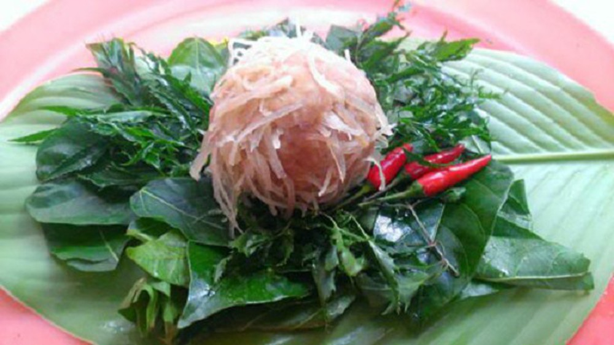

Nem chạo hay còn gọi là nem sống là món ăn không thể thiếu được trong ngày giỗ hay cưới hỏi ở làng Vị Thủy, huyện Thái Thụy, Thái Bình. Chỉ những người đầu bếp có kinh nghiệm mới được tự tay chế biến để người ăn không bị đau bụng. Khác với nem ở nhiều vùng miền trên cả nước, nem ở đây được làm từ thịt và xương sống lợn băm nhuyễn. Thịt lợn xẻ ra còn nóng hổi không dùng nước lã để rửa. Người ta lấy phần thịt mông và phần xương sống băm nhuyễn. Sau hơn 1 tiếng, thịt, xương và tủy hòa cùng nhau tạo ra độ dính, dẻo. Nét hấp dẫn trong món nem chạo là bì luộc thái mỏng và thính gạo rang. Bì lợn được cạo sạch lông với nước sôi rồi thái nhỏ. Sau đó các nguyên liệu được trộn cùng nước mắm ngon, tỏi thái mỏng, ớt tươi, mỳ chính và thính gạo rang. Ở khâu cuối cùng, người thợ sẽ nằm nem thành từng quả nhỏ vừa đủ khéo để thịt không rơi ra ngoài.